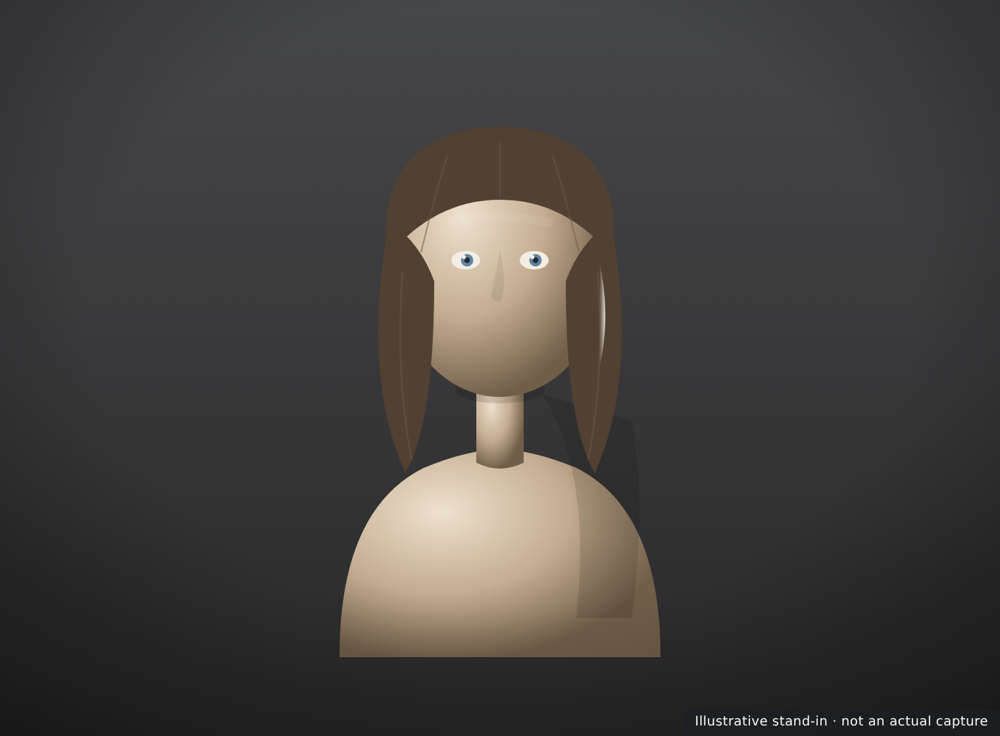
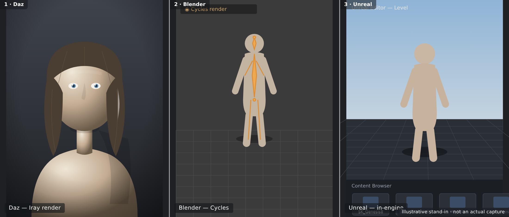

🏆 Lesson 5.3: Capstone — A Full Pipeline Portfolio Piece
This is it — the lesson that ties everything together. You've learned to pose, shape, surface, stage, light, render, simulate, animate, and bridge. Now you'll do it all on one character, start to finish, and carry that same figure across the entire pipeline: built and rendered in Daz, then bridged into Blender and dropped into Unreal. The result is a single asset that proves — to a client, a studio, or yourself — that you can move a character across the whole modern 3D pipeline. We'll walk the capstone step by step, then talk portfolio presentation and where to take these skills next. Let's finish strong.
🎯 Learning Objectives
By the end of this lesson, you will be able to:
- Plan a full-pipeline portfolio piece from a single character
- Build, light, and render a finished character in Daz
- Bridge the same figure into Blender and render it there
- Bridge that figure into an Unreal level
- Present the three results as a cohesive portfolio piece
- Identify where to go next to keep growing
- Recognize how the whole Daz pipeline fits together
Estimated Time: 90 minutes
Project: One character rendered in Daz, placed in a Blender scene, and dropped into an Unreal level — presented together as a single cross-pipeline portfolio piece. The course's capstone deliverable.
In This Lesson
The Capstone Goal
A capstone is a single project that exercises everything you've learned. Yours is deliberately ambitious but achievable: take one character all the way through the pipeline — authored and rendered in Daz, then bridged into both Blender and Unreal — and present the three outputs together.
💡 The one-sentence version: Build and render one character in Daz, bridge that same figure into Blender and Unreal, and present all three — proving you can move an asset across the entire modern 3D pipeline.
📖 Definition
Pipeline portfolio piece: a single asset shown at multiple stages across different tools, demonstrating not just one pretty render but the process and versatility to carry a character through authoring, rendering, and real-time engines. Studios value pipeline fluency as much as final images.
The point isn't three unrelated images — it's the same character appearing in each tool, so the through-line is unmistakable. That continuity is exactly what makes it a compelling portfolio piece rather than three separate experiments.
💡 Keep the scope tight
Resist the urge to make your most complex character ever for the capstone. A clean, well-lit, simple character carried flawlessly across three tools beats an elaborate one that breaks at every bridge. Nail the pipeline first; dazzle with complexity on your next piece.
⚠️ Important Note: Save early and often, and keep your Daz scene as the master source. Because both bridges are one-directional, any change to the character should be made in Daz and re-bridged — not patched separately in Blender and Unreal, which would let the three versions drift apart.
Build the Character in Daz
Everything starts in Daz. This stage is a victory lap through Modules 1–2: load a Genesis figure, shape it, pose it, and surface it — the authoring you now know well.
📖 Definition
Authoring (in this context): the creative build of your character before any rendering or bridging — choosing the base figure, dialing morphs for a custom look, posing it, and applying and tweaking Iray surfaces. It's the foundation every later stage inherits.
The build checklist
| Stage | Do this | From lesson |
|---|---|---|
| Load & pose | Load Genesis, apply a pose, refine it | Lesson 2.1 |
| Shape | Dial character/head/body morphs for a custom look | Lesson 2.2 |
| Surface | Apply and tweak Iray skin, eyes, and hair | Lesson 2.3 |
| Dress | Add clothing/hair; drape dForce if dynamic | Lessons 3.1, 4.1 |
✅ Pro Tip — favor bridge-friendly choices
Because this character crosses into Blender and Unreal, prefer reasonable texture sizes and only the morphs you truly use. A character built with the whole pipeline in mind transfers cleaner and faster than one optimized purely for a single Iray hero shot. Think ahead to the bridges while you build.
⚠️ Important Note: Finalize the shape and materials in Daz before bridging. Fixing a face morph or a skin tone at the source and re-bridging is clean; trying to fix it separately in three tools is a maintenance nightmare. Get the character right here first.
Light & Render in Daz
With the character built, produce your Daz hero render — the polished Iray image that anchors the piece. This is Module 3 in action: stage, light, render, and lightly grade.

The render checklist
- Stage & frame — camera, composition, headlamp off (Lesson 3.1).
- Light — an HDRI dome or a three-point rig, exposure dialed (Lesson 3.2).
- Render — Iray with the denoiser, converged and clean (Lesson 3.3).
- Finish — save a full-size PNG and apply a light grade.
💡 This is your anchor image
The Daz render is usually the strongest, most controlled image of the three, since Iray gives you photoreal skin with the least fuss. Make it excellent — it's the shot that draws people in, with the Blender and Unreal versions demonstrating range around it. Time spent here pays off.
⚠️ Important Note: Keep the pose and framing in mind for consistency. Presenting the same character in a similar pose across all three tools makes the pipeline through-line obvious. Wildly different poses in each tool weaken the "it's the same asset" story you're trying to tell.
Bridge to Blender
Now carry the exact same figure into Blender using the bridge from Lesson 5.1, and produce a second render there — showing the character living in Blender's Cycles or Eevee.
📖 Definition
Second render: a render of the same character produced in a different engine (here, Blender) — not to outdo the Daz hero shot, but to demonstrate that the asset transfers and holds up in another tool's lighting and materials. Range, not repetition.
Blender stage steps
- Send the finalized figure via the Daz to Blender Bridge (trim morphs first).
- Fix materials — raise subsurface, fix roughness and eyes under a test render.
- Light & render with your Blender-course skills — a fresh environment shows range.
- Save the Blender render at a matching resolution.
✅ Pro Tip — light it differently on purpose
Don't just replicate the Daz lighting in Blender — give it a distinct look (a different mood, environment, or grade). It proves the character is a real, re-lightable asset rather than a single baked image, and it makes the two renders interesting side by side instead of redundant.
⚠️ Important Note: Expect a materials pass, especially on skin — the bridge's shaders are a starting point, and Iray's look won't appear automatically in Cycles/Eevee. Budget time for this rather than being surprised; it's the normal price of crossing engines.
Bridge to Unreal
Finally, bring the character into Unreal Engine with the bridge from Lesson 5.2 and stage it in a real-time level — the third and most technically distinct stage of the piece.
📖 Definition
Real-time showcase: the character placed and lit inside an Unreal level, rendered interactively rather than offline. It demonstrates the asset works in a game/virtual-production context — a meaningfully different capability from the two offline renders.
Unreal stage steps
- Send the figure as a Skeletal Mesh into an open Unreal project (matching port/version).
- Tune Material Instances — subsurface on skin, hair sorting, texture sizes for real-time.
- Stage & light the character in a level; capture a high-quality screenshot or render.
- Optional — retarget an animation or add your Daz turntable for extra impact.
💡 A little real-time goes a long way
Even a single well-lit Unreal shot of your character in a level dramatically broadens the piece — it signals game and virtual-production readiness, not just still-image art. You don't need a playable demo; a polished in-engine capture makes the point clearly.
⚠️ Important Note: Unreal is the most likely stage to hit snags — port mismatches, version-locked plugins, real-time material quirks. Leave yourself time here, and lean on Lesson 5.2's troubleshooting. If a full level is too much, a clean character-in-a-simple-environment shot still completes the pipeline story.
Presenting the Piece
Three renders sitting in a folder aren't a portfolio piece — presentation makes them one. How you assemble and caption the results is what turns technical work into a compelling story.
| Do this | Why it lands |
|---|---|
| Lead with the strongest image | The Daz hero shot hooks the viewer first |
| Show the same character in all three | Makes the pipeline through-line unmistakable |
| Label each tool | "Daz · Blender · Unreal" signals your range instantly |
| Add a one-line process note | Tells the story: authored once, taken everywhere |
| Include the turntable if you made one | Motion shows the asset is real and complete |
✅ Pro Tip — a labeled triptych tells the whole story at a glance
Assemble the three renders into a single side-by-side triptych with small tool labels. One image that reads "same character, three engines" communicates pipeline fluency faster than any paragraph — and it's instantly shareable on a portfolio site or social post.

⚠️ Important Note: Be honest about what each image is — an in-engine Unreal capture and an offline Iray render are different kinds of images, and that's the point. Don't disguise a real-time shot as an offline render; the value here is showing you can do both, not pretending they're identical.
Where to Go Next
You've finished the course — but this is a launch pad, not a finish line. Here's where the skills you built can take you.
| Direction | Build on… | Next step |
|---|---|---|
| Deeper Daz artistry | Shaping, surfacing, lighting | Advanced skin, custom morphs, complex scenes |
| Blender mastery | The Blender bridge | The full Blender course — sculpting, shading, animation |
| Real-time & games | The Unreal bridge | The Unreal course — Blueprints, levels, cinematics |
| Animation | Timeline & dForce | Character animation, mocap, virtual production |
💡 The pipeline mindset is the real takeaway
More than any single tool, you've learned to move an asset between tools — the defining skill of modern 3D work. Nobody does everything in one program anymore. Knowing how to author in one place and deliver in another is exactly what makes an artist versatile and employable.
⚠️ Important Note: Keep making things. Skills fade without use, and a portfolio grows one finished piece at a time. The single most valuable habit from here is shipping complete work regularly — another character, another scene, another pipeline piece — rather than endlessly polishing one.
Hands-on: The Capstone
This is the big one — the whole pipeline on one character. Work through it at your own pace; it's the sum of everything you've learned.
🏋️ Exercise 1: Build & Render in Daz
Objective: Produce your Daz hero image.
Steps:
- Load, shape, pose, and surface a Genesis character (Modules 1–2), keeping textures and morphs bridge-friendly.
- Stage and light it (Module 3) — HDRI or three-point, headlamp off, exposure dialed.
- Render in Iray with the denoiser, save a full-size PNG, and apply a light grade. Save the scene as your master.
🏋️ Exercise 2: Bridge to Blender & Unreal
Objective: Carry the same figure into both engines.
Steps:
- Send to Blender, fix the skin/eye materials, light it with a distinct look, and render.
- Send to Unreal (project open, port matched) as a Skeletal Mesh, tune Material Instances, and stage it in a lit level.
- Capture a clean image from each — a Blender render and an in-engine Unreal shot.
💡 Hint — a bridge stage is fighting me
Go back to the bridge lesson for that tool. For Blender (Lesson 5.1): check both halves are installed and version-matched, and use the panel's Import if the live transfer didn't fire. For Unreal (Lesson 5.2): confirm the project is open, the plugin is enabled and built for your exact UE version, and the port matches on both sides. Most bridge trouble is install/version/port — not your character. And keep the export lean: trim morphs, sensible texture sizes.
🏋️ Exercise 3: Assemble the Portfolio Piece
Objective: Present all three as one cohesive piece.
Steps:
- Assemble the three images into a labeled triptych (Daz · Blender · Unreal), leading with the strongest.
- Add a one-line process note — "one character, authored in Daz, taken across the pipeline."
- Publish it to your portfolio or share it — then start planning your next piece.
🎯 Quick Quiz
Question 1: What makes the capstone a pipeline portfolio piece rather than three separate renders?
Question 2: Where should you make changes to the character, and why?
Question 3: What's the single most valuable takeaway from the whole course?
Best Practices
✅ Do's
- Keep the scope tight — a simple character carried flawlessly beats a broken complex one.
- Treat the Daz scene as the master and re-bridge after changes.
- Build bridge-friendly — sensible textures, only needed morphs.
- Make the Daz hero render excellent — it anchors the piece.
- Light Blender and Unreal distinctly to show range.
- Present a labeled triptych leading with your strongest image.
❌ Don'ts
- Don't fix the character separately in three tools — versions will drift.
- Don't leave Unreal for the last five minutes — it's the snag-prone stage.
- Don't disguise a real-time shot as an offline render — showing both is the value.
- Don't use a wildly different pose in each tool — it weakens the through-line.
- Don't stop at one piece — keep shipping finished work.
💡 Pro Tips
- Match pose and framing across tools so "same asset" reads instantly.
- Add your Lesson 4.2 turntable to the piece for extra impact.
- Write a one-line process caption — it tells the pipeline story.
- Save versioned scene files at each stage so you can always roll back.
- Plan your next piece before the excitement of finishing this one fades.
Summary
🎉 Key Takeaways
- The capstone takes one character across the whole pipeline — authored and rendered in Daz, then bridged into Blender and Unreal.
- Build and render the Daz hero shot first; it's your strongest, most controlled anchor image.
- Bridge the same figure to Blender and Unreal, expecting a materials pass in each and keeping Daz as the master.
- Presentation makes the piece: a labeled triptych of the same character in three tools tells the pipeline story at a glance.
- The real takeaway is the pipeline mindset — move assets between tools — and the habit of shipping finished work.
📚 Additional Resources
- Daz Bridges — all official bridges
- Daz Gallery — portfolio inspiration
- ArtStation — publish your portfolio piece
🚀 What's Next?
You've completed Daz Studio Essentials — from opening Daz for the first time to carrying a character across Daz, Blender, and Unreal. That's the entire modern pipeline in your hands. Revisit any lesson from the course home, take the Blender and Unreal courses to go deeper on those destinations, and above all, keep creating. Congratulations — you did it.
🏆 You finished the whole pipeline!
Pose, shape, surface, stage, light, render, simulate, animate, and bridge to two engines — you can now take a character from an empty scene all the way across the modern 3D pipeline. That's a genuinely professional skill set, and a portfolio piece to prove it. Be proud, keep shipping, and go make something amazing.